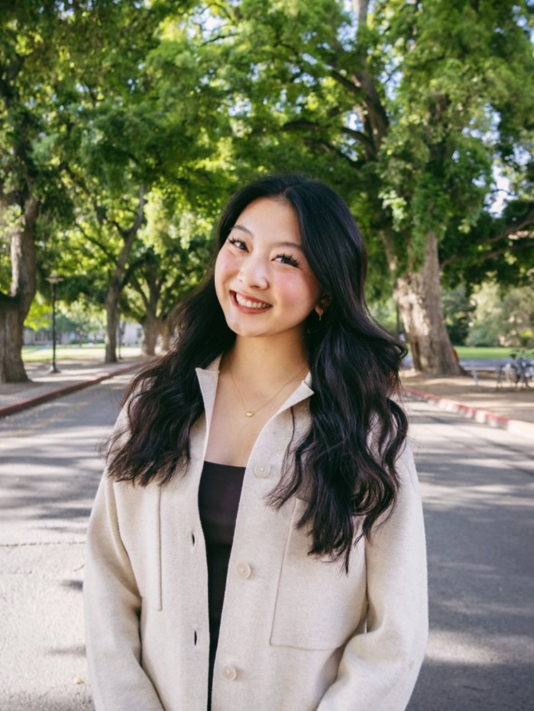
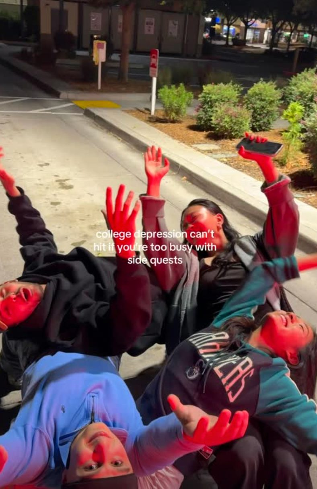
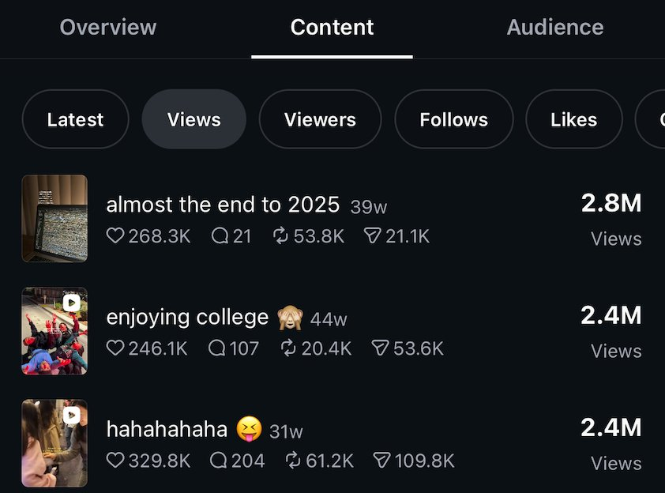
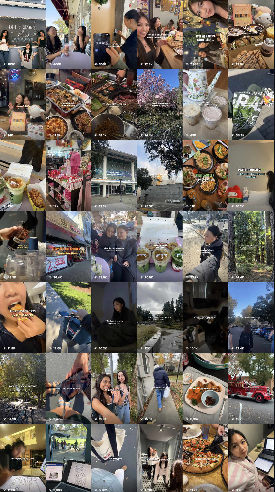
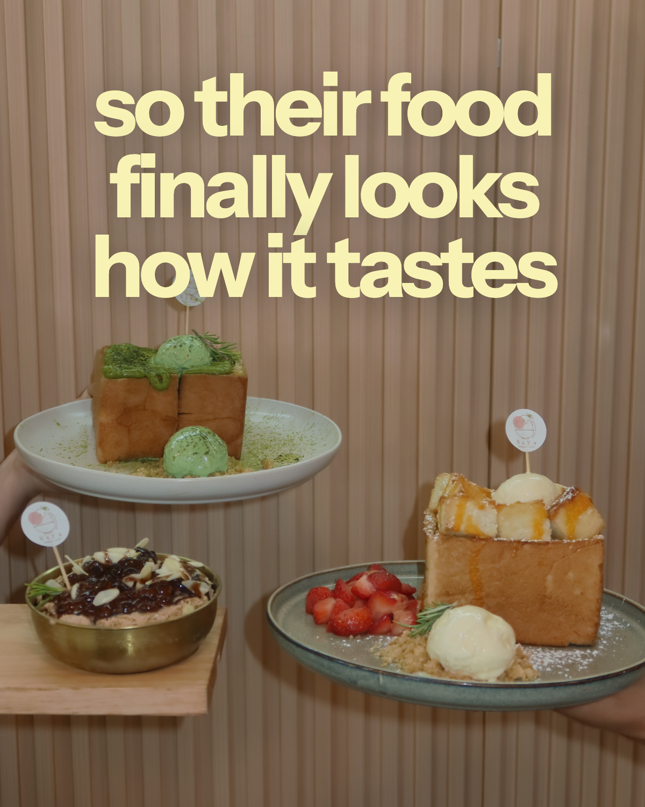
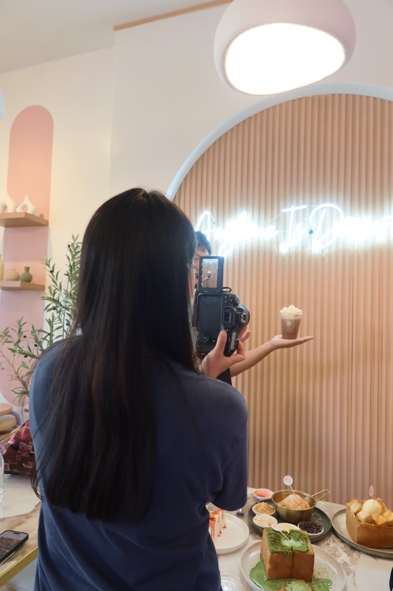
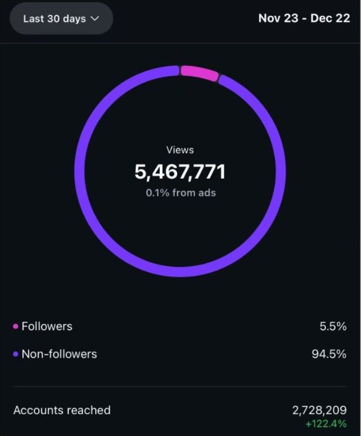
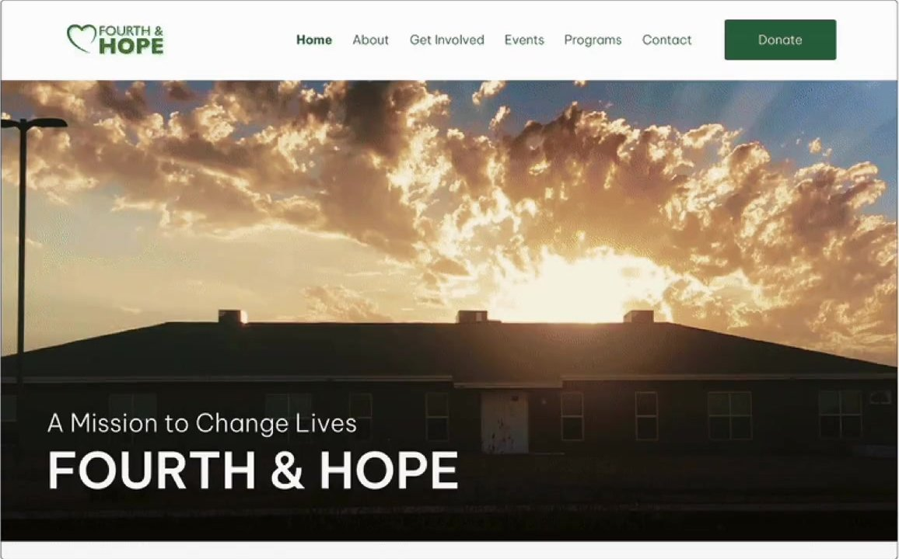
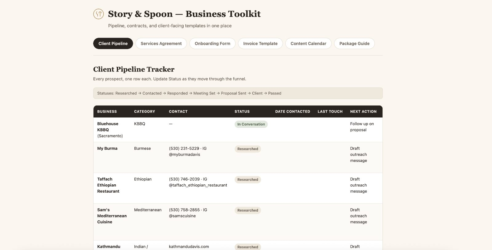
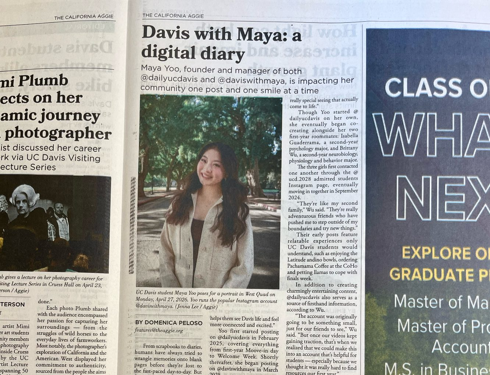

BRAND STRATEGY · GROWTH MARKETING · DESIGN
I build brands
people follow.

INSTAGRAM INSIGHTSnow
5.4M profile views this month
@daviswithmaya · started from zero
STORY & SPOONtoday
First client signed
NaYa Dessert Café · photo + video shoot
Marketer, Founder, Designer
I grow brands from zero: 6.6M+ monthly views, 30+ brand partnerships, and a studio I co-founded. Strategy, content, and design, all done myself.
Skills
Growth marketing★
Short-form video & content★
Brand partnerships★
Brand strategy★
UX/UI design★
FEATURED IN
The California Aggie ↗
Figma
Ps
Pr
Ai
Lr
Canva
CapCut
Meta
Claude
TRUSTED BY
{{ mb.name }}


01 / 03Founder · Media brand
DavisWithMaya
5.4Mprofile views in one month
30+ paid brand partnerships
→See the case study

02 / 03Founder · Campus media
Daily UC Davis
1.2Mviews in the first 30 days
57.8% from non-followers · 20+ local collabs
→See the case study

naya.dessertcafe

AAstoryandspoon.co
03 / 03Co-founder · Restaurant studio
Story & Spoon
01first client: NaYa Dessert Café
storyandspoon.co
→See the case study
WHAT I BRING
Four skills.
Here’s the proof.
01Growth marketing
6.6M+monthly views
A 2–3 posts a day system with hook-first editing, built from zero twice.

NON-FOLLOWERS
94.5% of all views
ACCOUNTS REACHED
2.7M · up 122%
02Brand partnerships
30+paid partnerships
Pitched, negotiated, and delivered every deal myself, including 1 of 50 Hero Cosmetics ambassadors.
NEW PARTNERSHIP✓
Hero Cosmetics × @daviswithmaya
NEW PARTNERSHIP✓
CapCut × @daviswithmaya
NEW PARTNERSHIP✓
BeachWaver × @daviswithmaya
+ 27 more
03UX/UI design
5design projects
Research to Figma prototype for Fourth & Hope, CampusBites, Nova, and more.
Fourth & Hope — HomeFigma

1440 × 900
Maya
USER TESTING
80% got lost. Fixed the flow.
04Founding & operations
3brands founded
Pipeline, contracts, invoices, and content calendars, all built and run myself.
Story & Spoon — Business Toolkit

CLIENT PIPELINE
50 restaurants researched

AS FEATURED IN THE CALIFORNIA AGGIE
“Being a content creator has taught me that authenticity matters most.”
Maya Yoo · Read the profile ↗
1 of 50national ambassadors for Hero Cosmetics
2×Ambassador of the Month: BeachWaver and Elevated Faith
30+paid brand partnerships, all outreach done myself
THE VIDEOS THAT DID IT
10M+ views.
Four videos.
×